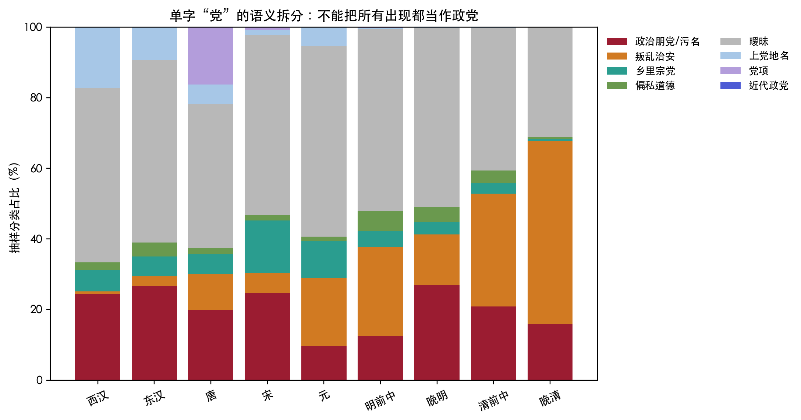
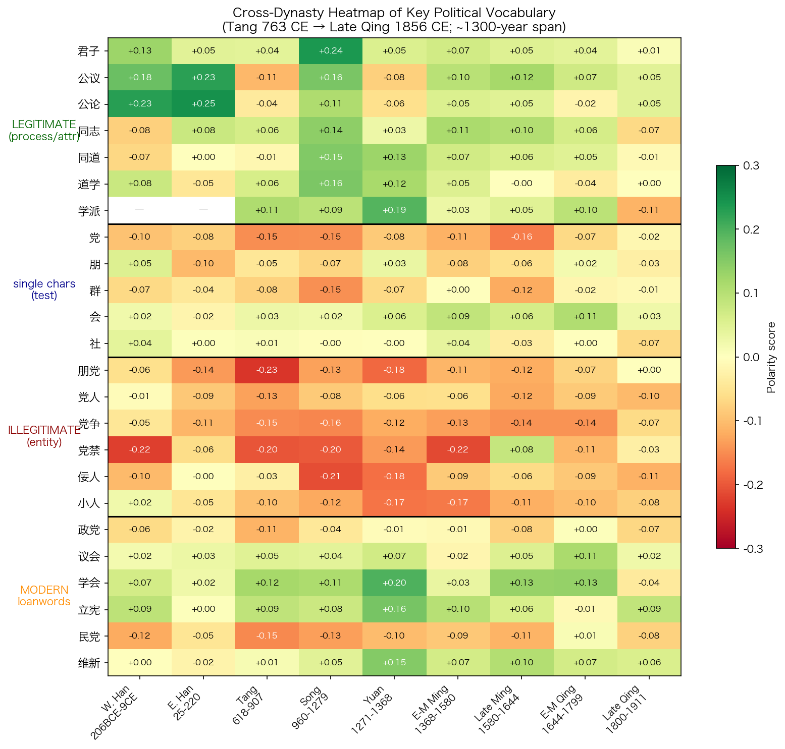
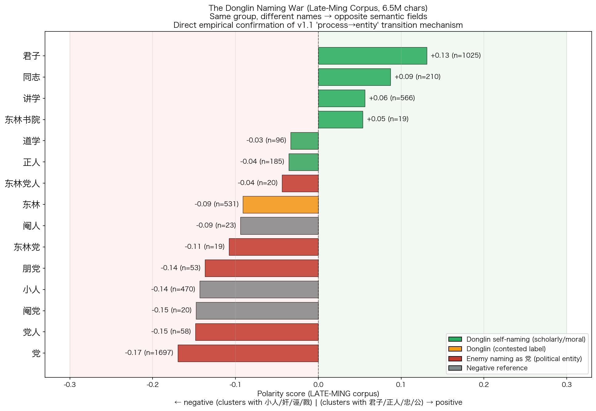
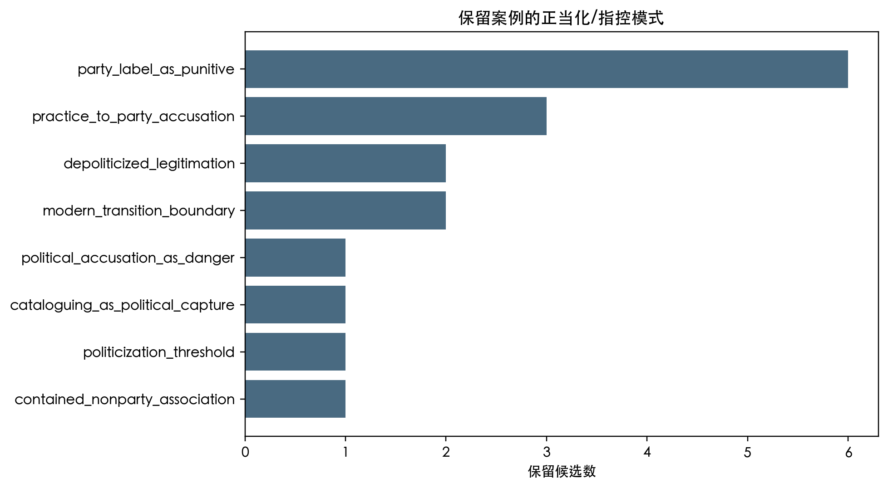
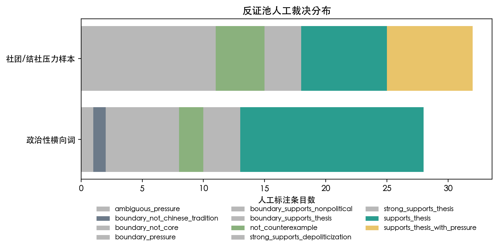
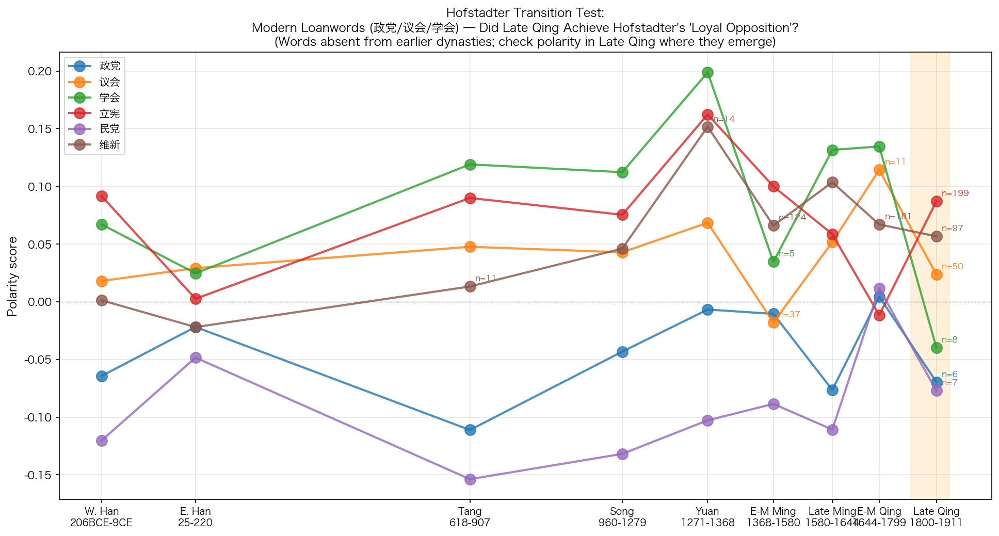

摘要
传统中国政治一直存在大量横向关系。士人有师友、同年、同乡、门生故吏，有书院、讲会、文社、乡约、会馆、公所，也通过清议、公论、荐贤、弹劾和联名请奏参与政治。如果把这些关系都称为“横向联盟”，帝国官僚政治就不只有君臣之间的纵向秩序。然而，这些关系存在，不等于横向政治组织获得了公开而稳定的正当身份。本文考察的不是“有没有结党”，而是传统中文政治语汇能否承认一种持续组织化、公开影响朝政方向和人事安排的合法党派。
Levine 的研究提示我们从政治语汇入手。研究者不必先用现代 party 概念寻找中国的对应物，而应考察哪些中文政治词汇能够正面指称横向关系，哪些词在涉及国家权力时会成为罪名。宋代词向量模型比较不同词在语料中的邻近关系。模型显示，“党”“朋党”“党争”等词靠近“小、奸、佞、邪、私”等负向锚词；“公议”“公论”“同志”“同道”“讲学”“书院”“会”等词则在若干时段具有不同程度的正向含义。跨十个时段的全词表扫描还显示，友谊、德性、学术、誓约、公共议论和地方共同体各有获得正当性的词汇，而可被理解为政治集团的党类词长期偏向负面。
本文的结论是：传统中文政治语汇长期不承认稳定而合法的党派，但在某些时期允许士人通过公议、同道、讲学等关系共同影响人才判断和朝政方向。本文把后一种现象称为合法横向政治性。合法的是“公议”，不是“党议”；合法的是“同道”，不是“同利”；合法的是“讲学”“会文”“乡约”“会社”，不是以党派身份争夺朝局。横向关系可以存在，也可以形成强大的士人网络并产生政治影响，但参与者必须用公、道、学、义、教化、荐贤说明这种关系的正当性。一旦这种关系被说成持续存在的集团，并被指控操纵人事、把持公论或交通朝局，它就会被归入“朋党”“私党”“社党”“门户”“党局”“党狱”等罪名。庆历党议、东林、复社案和晚清政党词汇分别显示了这条边界在不同时期的变化。
一、横向关系的合法名位
帝国政治不能只靠君臣关系运行。皇帝要判断地方官是否称职，要了解朝廷之外的士人意见，也要依靠官僚之间的举荐、弹劾、书信和声望来识别人才。士人进入政治时也不是彼此孤立的。他们学习相同的经义，出自同一师承，又通过同年、同乡、题跋、保荐、声援和攻讦建立联系。缺少这些横向关系，官僚国家就难以发现和评价人才。
中国传统政治语言既承认这些联系的作用，又把它们视为风险。国家需要君子互相交往，也担心臣下相互勾连；需要公议帮助判断人才，也担心公议背后形成门户；允许士人讲学、会文、立约、结社，也担心会社影响科名、人事和朝局后成为私党。因此，国家会利用横向网络，却不愿承认它可以成为独立的政治主体。
“公议”和“朋党”都可以指不由皇帝个人直接作出的政治判断，也都可能由士人相互确认并传播。但两者的正当性不同。“公议”声称代表公共是非；“朋党”则指私人集团控制公共判断。忠贤可以用前者为共同意见辩护，反对者也可以用后者把一批人一并排逐。因此，关键不在于士人是否形成群体，而在于这种群体获得什么名称和政治含义。
现代政党政治承认公开的组织竞争，允许团体代表不同利益、理念和政策路线，并用制度安排处理竞争。传统中国政治语汇不承认同类团体具有正当身份。它可以承认“同道”，因为道义高于私人关系；可以承认“公议”，因为公共是非高于集团利益；可以承认“讲学”，因为学术不直接等同于权力竞争；可以承认“乡约”，因为它属于地方教化。它很难承认“党派”，因为党派是持续存在并能争夺国家判断权的横向政治组织。
本文所说的合法名位，是指一种关系可以用公开、稳定且正面的名称存在。传统政治语汇划出的主要界线不是“横向/纵向”，而是“公的横向过程/私的政治实体”。共同议论、讲学或荐贤可以获得正当性；一个持续存在的横向政治组织则必须不断证明自己不是私党。
二、Levine 的立论：从制度空缺转向语义空缺
Levine 研究的问题是：在传统中国政治思想和政治书写中，为什么合法的横向政治组织很难获得稳定名称？制度史可以给出一部分答案。传统中国没有议会制度、现代结社权和竞争性政党，因此也没有现代意义上的合法政党。但制度条件不能完全解释政治语言的作用。即使没有现代制度，一种语言仍可能用正面词汇指称某种政治关系。相反，如果相关词汇长期带有污名，这种关系在制度形成以前就很难获得正当性。
本文主要依据 Ari Daniel Levine 对北宋派系语言的研究。他在 2005 年发表《Faction Theory and the Political Imagination of the Northern Song》¹，考察北宋党争中的政治修辞和政治想象。他指出，1068 至 1127 年的朝廷冲突不仅涉及人事和政策，也包含围绕“党”“朋党”展开的道德评价。2008 年出版的《Divided by a Common Language: Factional Conflict in Late Northern Song China》进一步把这类冲突放入晚北宋政治文化中分析。²[待典藏核实] 本文采用的是他同时考察政治语言与派系行动的方法，而不是从他的研究中抽取一个孤立结论。
Levine 的方法不把“党”直接等同于 party，也不把“社”“会”“盟”直接等同于 association，而是先考察这些词在文本中的邻近关系。例如，“党”更常接近“公”“忠”“义”“贤”，还是更常接近“私”“奸”“邪”“小”？“公议”“同道”“讲学”能否在政治语境中表示正当关系？“会”“社”“盟”在什么情况下指礼俗、学术或互助，又在什么情况下与党名相连？这种方法考察词语在具体政治语境中的分布，不能用词典释义代替。
Levine 的论证以北宋派系语言的二分和道德化为前提。政治行动者并不只说“我们有不同政策”，而是把己方称为君子、忠贤和公义，把对手称为小人、奸邪和私党。君主负责辨别何者是君子之朋，何者是小人之党。派系语言因此不只是描述既有关系。朝廷怎样界定“朋党”，会直接影响哪些横向关系可以保留、哪些人会被排逐。
近年的数字人文研究补充了这一分析。De Weerdt、Ho、Wagner、Qiao、Chu 对宋代三份党籍名单分别做了网络分析，得出的结论并不相同³：1104 年名单的核心是一个大型、相互连结的京师网络；绍兴名单不构成联盟，更接近秦桧当政期间多轮政治报复留下的受难记录；庆元名单则由政治与思想两类群体组成，是内部连接密集的等级化联盟。三份名单的差异说明，“党”与“朋党”所指的政治关系形态并不单一，具体形态取决于名单本身的结构，不能一概而论。因此，派系既不能被视为纯粹的话语虚构，也不能被当作单一形态的现代组织实体。研究必须同时考察它的名称、人际关系和政治行动。
“古代无政党”不能概括全部问题。古代没有现代政党，不等于古代没有合法的横向政治活动；古代有书院、文社和乡约，也不等于古代已有合法党派。需要解释的是，横向关系接近朝政权力以后为什么会改变名称。朋友、讲学和公论本来各有正当含义；当这些关系开始影响升黜、科名、奏疏、政策和朝局时，它们可能被称为朋党、党人、党羽或党局。
本文把这组相互关联的词称为语义网格。网格的一端包括“君子、忠、贤、公、义、道、学”，另一端包括“小人、奸、佞、邪、私、利、比周、朋党”。横向关系若以前一组词获得解释，就可能被视为国家需要的士人共同体；若被归入后一组词，就会被理解为遮蔽君主并操纵人事的私人集团。传统政治语言没有完全禁止士人交往，而是要求所有交往都接受公私之辨。
三、宋代“党”字的语义空间
宋代士人通过科举、馆阁、台谏、书院、讲学、文字交往和公共议论建立了密集联系。与此同时，庆历以来的朋党指控以及元祐、绍圣之间的党籍政治，使“党”成为敏感的政治罪名。士人的横向联系和党禁在同一时期都很突出，因此宋代材料适合用来检验中文政治语汇是否为合法党派留下了稳定位置。
词向量模型比较词语在宋代政治语料中的邻近关系。结果显示，“党”和若干可能表示集团的词靠近负向政治道德词；“会”“盟”“讲学”“书院”“公议”等词则分布在不同位置。本文所说的语义空间，就是这些词在模型中因上下文相近而形成的相对位置。这一结果来自宋代文本中的共现关系，不是把现代政治概念直接投射到古代材料。它表明宋代语汇可以正面指称某些横向关系，但“党”不在这些正面词的中心。

单字“党”有多种含义，可以指乡党、宗党和上党地名，也可以指偏私、朋党、党争和逆党。如果不区分义项，统计结果会混合地名、宗族、地方共同体和政治集团。重新抽样并分类后，政治朋党只是“党”字用法的一部分，却是分析朝政语境时最相关的一部分。因此，不能用全部“党”字的统计结果证明政治党派一定带有负面含义，也不能因为“党”另有乡党、宗党等含义，就否认“朋党”“党争”“党人”在政治语汇中具有很强的负面含义。


正负锚词诊断比较目标词与两组参照词的距离。“党”的政治含义不是由一个孤立数值决定，而是由它同正向、负向锚词的相对距离表示。如果“党”主要指普通聚合，它应更接近友、群、会、社等中性或正向群体词；如果它主要表示政治污名，就会更接近奸、邪、私、小等负面词。宋代模型更接近后一种情况，复合词“朋党”“党争”的结果尤其清楚。

四、横向关系的七层谱系
只分析“党”字，无法说明不同横向关系之间的差异。传统中文用友、朋友、知己、君子、义士、侠、盟、誓、约、会、社、乡党、宗族、邻里、讲学、书院、公议、公论、廷议、朝议、结社、学会、政党等词指称横向关系。这些关系都不同于君臣之间的纵向关系，但它们获得正当性的程度并不相同。
七层类型学按照关系的性质区分这些词。第一层是双人友谊，第二层是道德身份，第三层是抽象伦理，第四层是学术活动，第五层是誓约或盟约，第六层是集体决策，第七层分为礼俗共同体和可能成为独立组织的政治实体。德性、学问、礼俗和公共判断较容易获得正当性；持续组织、集团身份和政治竞争则更容易受到污名化。

| 层级 | 典型词 | 合法性来源 | 危险边界 |
|---|---|---|---|
| L1 双人友谊 | 友、朋友、知己、故旧 | 私人伦常与情义 | 进入官场请托后可能变成私交 |
| L2 道德身份 | 君子、正人、贤者、义士 | 德性与人格声望 | 被对手称为标榜门户 |
| L3 抽象伦理 | 仁、义、忠、信、公义 | 高于私人利益的规范 | 若被证明是假公济私，则正当性崩塌 |
| L4 学术活动 | 讲学、书院、道学、学会 | 教化、修身、经义、人才培养 | 影响科名与朝政后可被称为门户 |
| L5 誓约盟会 | 盟、誓、约、会盟、同盟 | 礼制、外交、地方互助、义气 | 秘密结纳或武装化后接近谋逆 |
| L6 集体决策 | 公议、公论、廷议、朝议 | 公共判断与国家议政过程 | 若被说成某派操纵，则变成党论 |
| L7 组织实体 | 党、朋党、私党、党人、党争 | 很难取得独立合法性 | 默认接近私、利、比周、壅蔽、争权 |
全词表扫描支持这一区分。L1 双人友谊在先秦、唐、宋、晚明、清前中期、晚清均值分别约为 0.133、0.088、0.068、0.080、0.065、0.057；L3 抽象伦理长期更正，先秦约 0.187，宋约 0.185，晚清约 0.179。与之相对，L7b 单字候选法人整体偏负，先秦约 -0.033，唐约 -0.056，宋约 -0.074，晚明约 -0.085；L7b 复合被禁绝词更负，先秦约 -0.109，唐约 -0.139，宋约 -0.156，晚明约 -0.143。
这些数值只能说明词语在语料中的相对位置，不能单独证明制度史结论。它们显示，传统语汇可以正面表达“人们横向结合”，但较少正面表达接近政治组织实体的关系。友谊、德性、学问、誓约、公共议论和地方礼俗各有相应的正面词汇，以党派身份持续存在的政治组织则很难获得同样的正面名称。
这种区分可以解释几类材料。乡党、宗族和邻里都是共同体，但不是现代政治组织；会盟可以属于诸侯礼制或外交秩序，不一定指国内政治党派；书院和讲会可以形成公共意见，仍以学问和教化为名；公议和公论可以影响人物进退，却必须声称自己代表公共是非而非一派私议。传统语汇有许多表达横向关系的词，但这些词分别把正当性归于友谊、礼俗、学问或公共判断，难以共同构成一个正当的党派身份。
五、跨王朝合法横向词的变化
只分析宋代，会把理学和士人政治在宋代的特点误当成历代通例；只分析晚明，也会把东林、复社的政治危机误当成传统政治的全部情况。本文因此比较先秦、西汉、东汉、唐、宋、元、明前中期、晚明、清前中期、晚清十个时段。结果显示，党类词长期偏负；能够正面表达横向关系的词则并不稳定，先后经历生成、增强、受压、转义和重新制度化。


党类词的负面含义最为稳定。单字“党”在先秦约 -0.117，唐约 -0.148，宋约 -0.157，晚明约 -0.171，清前中期仍约 -0.051；“朋党”在唐约 -0.265，宋约 -0.148，晚明约 -0.160，清前中期约 -0.091。复合党名比单字党更能排除地名、宗族等无关义项，因此更能显示政治污名的稳定性。
正面横向词的含义并不稳定。“公议”在唐代有 42 次却偏负，宋代转为强正，晚明仍正，清前中期略正；“公论”唐代偏负，宋代转正，晚明接近中性；“同志”“同道”在宋以后更明确地表示正面横向关系。合法横向语汇并非从一开始就具有稳定含义，而是在宋代士人政治与理学兴起后取得更强的表达能力。
| 词项 | 唐 | 宋 | 晚明 | 清前中期 | 含义 |
|---|---|---|---|---|---|
| 党 | -0.148 | -0.157 | -0.171 | -0.051 | 单字多义，但政治语境长期偏负。 |
| 朋党 | -0.265 | 约 -0.148 | -0.160 | -0.091 | 复合词更接近政治污名核心。 |
| 公议 | -0.138 | 约 0.181 | 0.113 | 0.063 | 宋以后成为表达合法横向判断的重要词。 |
| 公论 | -0.054 | 约 0.123 | 近中性 | 略负 | 可以表达公共判断，也可能受到门户指控的影响。 |
| 同志 | 约 0.071 | 约 0.218 | 0.094 | 0.072 | 同道性共同体在宋明获得较强政治表达。 |
宋元时期的公议、同道与道学正统化
庆历以后，台谏、馆阁、科举、学校、书信、文集和墓志使士人的意见更容易在官僚群体中传播。本文把这种共同形成并传播政治判断的能力称为士人公共性。“公议”“公论”“同志”“同道”在宋代转为正面，并非只是词频偶然变化，而与这种政治文化的变化有关。宋代士人要抵抗朋党罪名，必须把横向关系解释成以道义为基础的共同体。欧阳修《朋党论》是这一变化的代表。
《朋党论》没有回避“朋党之说”，而是要求君主辨别君子和小人。欧阳修承认朋党之说“自古有之”，又区分以同道相交的君子和以同利相交的小人。他承认可疑的横向关系确实存在，把基于道义的关系与基于利益的结纳区分开来，并把最终判断权交给君主，而不是交给自称正当的党派组织。苏轼续论把“进朋党之说”称为小人空国的方法，同时又警惕国有党则君危。因此，宋代反对以朋党罪名排逐君子的论述，并没有导向党派自由，而是要求更细致地区分君子与小人。
叶适的墓志材料显示，正面横向词在宋代已经可以指具体政治行动。“率同志请于周丞相”不是私人赏识，而是多人共同向丞相提出请求；“以公议自为当世重轻”也不只是道德自许，而是把士人的共同判断用于评价政治人物。⁴这些材料表明，宋代出现了合法横向政治性的窗口，即士人能够以正面名称共同参与政治。这个名称是“同志”或“公议”，不是“党”。横向行动越直接影响政治，参与者越需要用非党名词说明它的正当性。
元代材料提出了另一种可能。横向语汇被纳入国家正统和制度以后，也可能减弱原有的政治作用。道学在宋代与讲学、师友、学派和士人公共性密切相关；到了元明以后，它逐渐进入官学与正统谱系，成为帝国意识形态的一部分。一个词进入国家正统，不等于制度承认了相应的横向政治关系；它也可能被限定为学术名目，不再挑战朝廷的判断权。
宋代士人用同道、公议和道学回应朋党罪名。元代以后，一部分道学进入正统谱系，取得更高地位，同时减少了作为横向政治网络的作用。它可以成为官学的评价标准和道统谱系，却很难成为组织化朝政竞争的公开名义。因此，宋元之间的变化不是简单的上升或衰落，而是同一套词汇的政治用途发生了变化。明代讲学和书院也会经历类似过程，晚明的政治冲突则更为激烈。
明代概览：讲学、书院与东林复社
明代讲学和书院再次活跃。阳明学、讲会、书院和地方士绅网络，使士人可以在官僚体系之外共同评价人物和政治。晚明“公议”“同志”“讲学”“书院”的可见度很高，说明合法横向政治性并未消失。但这些关系一旦进入科名、人事、台谏、内阁和阉党斗争，就会很快被称为朋党、门户或社党。东林和复社都经历了这种变化。
晚明士人的共同意见已经能够影响朝政，现有制度却仍不承认合法党派。士人用讲学、公论、名节和同志说明自己的正当性，反对者则用门户、朋党、社党和党局指控他们。两套名称针对同一批关系，却给出相反的政治评价。这是传统政治语汇处理高度组织化横向政治的常见方式。
东林材料清楚显示了名称怎样改变。顾宪成在东林讲学，支持者可以称为阐明绝学、相与切劘；反对者也可以把同一网络说成遥执朝政、京察尽归党人、门户始于东林。书院和讲学本来可以获得正当性；书院一旦被说成控制朝政的组织中心，讲学就成为党争指控的证据。无论东林实际有多强的组织力，传统政治语汇都用两套互相排斥的词来解释它：支持者说讲学、公论、同志，反对者说门户、党人、朋党。
复社的组织程度比东林更高。它有社名、领袖、地域网络、文字生产和科举影响，比许多松散的士人关系更接近组织实体。但复社仍用会文、应举和考德问业为自己辩护，反对者则把同一组织说成社党布结、横于朝野、紊乱漕规和朋党蔑旨。晚明的名称之争直接进入司法、奏疏和舆论，并影响人们怎样处置实际存在的士人组织。
Levine 命题在各朝代有不同表现。唐代以前，公议、同志、道学等词的横向政治功能尚不稳定；宋代士人政治形成了更强的合法横向窗口；元代道学进入正统后，作为横向政治网络的作用减弱；明代讲学和书院再次加强士人联系；晚明东林、复社影响朝政后，很快受到朋党、门户和社党的指控；清代官方政治继续警惕朋党；晚清出现新词，但合法党派仍须依靠近代制度重新建立。
传统语义网格并非始终不变。新的士人公共性出现时，公议、同道、讲学、会社等词可以正面表达共同政治行动；这些关系形成持续的朝政集团后，私党、门户、党局、党狱等负面名称又会出现。本文把这种反复变化称为周期性机制。
清代材料进一步说明了这一机制。私人伦常和士人交往可以存在，朝廷公事却不能受党援影响。清代没有消灭所有横向关系，而是把它们限定在伦常、教化和官僚协作之中，不允许它们以独立政治组织的名义参与朝政。
六、汉代党锢案与党名的负面含义
两汉材料为后世理解党名提供了早期参照。后世可以把东汉党锢写成忠贤受难，也会把“党”与“朋党”记作朝廷政治的弊病。范晔叙述桓帝、灵帝时期宦官、外戚、士人和朝臣互相指斥，党名既能成为迫害清流的罪名，也能用于描述朝廷秩序衰败时形成的私门集团。Levine 注意到，北宋派系理论家回顾东汉时，既把党锢诸贤视为君子受诬的典型，又从汉末历史中取得“朋党亡国”的警戒。
这两种记忆使“党”不能被简单理解为固定实体。同一个党名，可能是小人构陷君子的罪名，也可能是对私党乱政的描述。后世政治理论因此既不能只说“禁党”，也不能只说“有党无害”，而是反复要求君主辨别被党名诬陷的君子和真正以私害公的小人。
两汉还没有形成宋明时期那种以“公议—同道—讲学”正面表达横向政治关系的成套词汇。早期材料通常用亲亲、朋友、师友、乡里、士君子相知等伦理关系说明人们为什么可以互相信任，却很少据此承认朝廷内部可以存在稳定的竞争性集团。“党”进入朝政语境后，反而容易与比周、阿附、外戚、宦官和私门相连。因此，后世即使同情党锢诸贤，也不愿把“党”本身改成正当组织名，只会为被党名误伤的君子辩护。
两汉材料没有提供“合法党派”的早期形态，而是形成了一种后来反复出现的解释方式。贤者相交必须证明以道义为依据，小人相交则可以归入私党。后来欧阳修说君子有朋而小人无朋，正是用这种区分回应朋党罪名。他没有承认党派合法，而是用“君子”“同道”“公”等词说明哪些横向关系可以获得正当性。
党锢案还显示党名怎样用于国家处分。《后汉书》记灵帝时中常侍侯览讽有司奏虞放、杜密、李膺等“皆为钩党”，下狱死者百余人，妻子徙边，附从者锢及五属；制诏州郡大举钩党，于是“天下豪桀及儒学行义者，一切结为党人”。⁵豪桀、儒学、行义原本不是同一种身份，钩党处分却把他们一并列为“党人”。国家不需要证明这些人有统一组织、共同章程或公开纲领。名节声望、太学舆论、士人交游和对宦官政治的批评一旦被归入“钩党”，相关人员就可以受到禁锢、株连和排除。
欧阳修、苏轼、李德裕等人反复引用党锢案，因为这个事件同时保留了两种记忆：君子可能被诬为党人，党名也可能破坏国家对人物的判断。它使后世相信“朋党之说”能够迫害忠贤，也使后世警惕士人舆论形成朝廷以外的人物评价标准。汉代党锢案由此成为“同道可贵、党名危险”这一政治解释的早期范例。
七、唐代牛李叙事中的党名与朝廷人事
唐代材料中的党名更多直接涉及朝廷人事。跨时段模型中，唐代“党”约 -0.148，“朋党”约 -0.265，是所有时段中极性最负的一组之一。中晚唐政治记忆中的牛李党争成为后世讨论朋党的主要案例。现代研究可以重新判断“牛党”“李党”是否为后世史家建构，但在传统叙述中，它们已经被用来说明朝臣结党、相互排击和破坏国家判断。
这不表示唐代已经有现代党派，而是说党名已与宰相、台谏、科举、任官、朋比和排挤相连，不再只指地方宗党或朋友同类。唐代“公议”出现的次数不少，极性却偏负，说明“公共议论”还没有稳定成为士人参与政治的正当名称。朝廷更容易把横向结纳理解为争权和门户。
牛李党名还说明，派系可以先在史学叙述中形成。所谓牛李不必等同于两个有章程、纲领和成员边界的组织。史家、奏议和政治记忆把若干人物、科第出身、荐引关系、政策倾向和相互排击并置以后，“党”便成为概括这些复杂关系的责任主体，政治失败也可以被归因于某个横向集团。
传统政治语言承认人事网络真实存在，也会识别、描述并追究这些网络。这样做通常不是为了承认组织竞争，而是为了恢复朝廷对人事和政治的判断权。唐代党名已经明确指向朝廷政治，却仍没有因此获得合法政治身份。
《新唐书》的牛李叙事显示了党名怎样用于朝廷人事。文宗问李德裕是否知道朝廷有朋党，德裕答称中朝半为党人，若任用中立无私者，党与便可破除；文宗又说众人以杨虞卿、张元夫、萧澣为党魁，随即将三人外放为刺史。⁶这里的“党”指围绕宰相、给事中、宾客往来和任官升黜形成的朝廷人事集团，不是民间宗族或乡里同类。朝廷也通过迁官、贬逐和隔离处理相关人员。
文宗说“去河北贼易，去此朋党难”，把朋党和藩镇都视为国家难题。河北藩镇形成军事割据，朋党则可能使朝廷的人事判断受集团控制。李训、郑注用事时，又借党名“凡不附己者皆指以二人党”，连续迁贬异己，导致班列几空。党名既表达了对真实派系的警惕，也成为新权力集团排除异己的工具。
李德裕后来问“所谓党者，为国乎？为身乎？”，试图区分可以获得正当性的共同政治行动和私党。随会、叔向、汲黯、房玄龄、杜如晦等同心图国，不应算党；诬善蔽忠、附下罔上、昼夜合谋，并在美官要选时悉引其党，才属于他所说的党。这一区分与欧阳修相近：同心为国可以辩护，组织性的私党必须排除。它没有提出合法党派概念，而是用忠、公、义和为国说明横向关系的正当性。唐代材料可以清楚讨论派系，但判断标准仍是“无私为国”，不是“公开党派竞争”。
八、宋代庆历党议与欧阳修《朋党论》
欧阳修《朋党论》直接说明了宋代怎样区分正当的横向关系和私党。欧阳修没有沿用“臣下不应有朋”的说法，而是承认朋党之说自古有之，并要求区分君子和小人。君子与君子以同道为朋，小人与小人以同利为朋。⁷小人因利益暂时联合，利益消失后会彼此伤害；君子以道义相互帮助，可以同心共济。
欧阳修要说明，同道之朋不是私党，而是国家需要的人才共同体，因为小人可以用“朋党”二字排除忠贤。他为横向关系辩护，却没有为党派身份辩护。横向共同体要获得正当性，必须说明其成员因道义相交，而不是为了组织利益结纳。
苏轼续论欧阳子时说：祸莫大于权之移人，君莫危于国之有党，有党则必争，争则小人胜。⁸他没有否认君子可以相互交往，而是担心国家判断权从公法和君命转移到私门集团。朋党的危险不在友谊或多人共同行动，而在集团控制本应属于国家的判断权，并把公议变成私议。
庆历党议中的荐贤网络与“党人”罪名
庆历三年前后，仁宗更用大臣，杜衍、富弼、韩琦、范仲淹在位，欧阳修、蔡襄、王素、余靖等进入言路。支持者可以把这个局面解释为进贤、开言路和修弊政：君主询问执政，谏官进言，士大夫相贺。与此同时，大臣、台谏、馆阁和文人互相认识、互相援引并共同推动政治方向，已经形成了具有政治作用的横向关系网络。
范仲淹被贬饶州后，欧阳修、尹洙、余靖等因直范仲淹而被逐，材料说他们被“目之曰党人”；自此“朋党之论起”。⁹支持者把同一组关系称为直言、荐贤和同道相助，反对者则称相关人员为党人。党名不只是事后评论。朝廷可以据此把一次具体政治声援认定为集团行为，并成批处分有关人员。
欧阳修在这种政治压力下写作《朋党论》。他没有说“我们不是一群人”，也没有说“朝廷中绝无横向声援”，而是承认君子之间可以有朋，并用同道、忠信和名节说明这种关系的正当性。这样一来，君子之间的横向关系获得了辩护，党派身份却仍未获得承认。欧阳修可以说君子之朋有益于国家，不能说一个组织化派别有权以派别身份持续存在。
欧阳修后来因杜衍、韩琦、范仲淹、富弼相继被罢而上疏。他说，逐一寻找善人的过错很难，要尽数排除他们，最有效的办法就是“指为朋党”；要动摇大臣，则可以加上“专权”之名。¹⁰朋党罪名由此发挥两种作用：它把多个善人合并为一党，也把君主对大臣的信任解释成臣下夺权。朋友或同道一旦同时受到这两种指控，就会被视为危及君权的组织。
苏轼同情受朋党之说陷害的君子，又认为国有党则君危。这两个判断并不矛盾：”朋党之说”可以成为小人陷害君子的工具，真实党争也可能转移国家权柄。因此，宋代可以强烈反对滥用朋党罪名，却仍不能提出合法党派论。庆历案的结论不是”横向联盟完全非法”，而是”政治性横向联盟必须被改写为君子同道，不能以党派名位自保”。
这一组文本说明，传统政治语言能够容纳“君子之朋”，却不把它制度化为合法党派。它能说同道，能说公义，能说忠贤相与；它不能公开承认一个持续存在、以组织身份竞争朝政方向的政治团体。
叶适的墓志也保留了这种区别。¹¹詹体仁在赵丞相去位、士久失职之后，“率同志请于周丞相”，反复论变通之理，并疏荐知名者三十余人。这项行动涉及朝政、人事和政策方向，不是私人友谊。叶适却称参与者为“同志”，而不是党。王闻诗“能以公议自为当世重轻”也是如此：士人的共同判断可以影响政治，但必须被称为公议，不能公开承认只代表某一党派意见。
宋代并不是 Levine 命题的反例。宋代士人确实更常用公议、公论、同志、同道、讲学和书院正面表达横向关系，但这些词没有导向合法党派。它们只使横向政治性能够暂时以公、道、学、义的名义出现。
九、晚明东林书院的讲学网络与门户指控
东林最初以书院和讲学取得正当性，不是以社党名义活动。顾宪成归里后，依托东林书院大会吴越士人，讲习经义，辨析阳明学与程朱学，四方贤士相从。按照七层类型学，东林首先属于 L4：学术活动、道德修养、师友讲习和士人教化。后来出现的门户指控，显示这类原本正当的关系在直接影响朝政后怎样失去合法名位。
东林的活动后来不再限于学术。顾宪成曾在吏部、京察、会推阁臣和国本之争等问题上形成政治声望；孙丕扬、赵南星、高攀龙、邹元标、李三才等人与东林声气相接。讲学本身不等于党派，但讲学网络为士人提供了共同语言，也传播了对人物的评价和声望。当这些联系影响京察、人事、三案和阉党斗争时，反对者便把书院说成组织和影响朝政的中心。
支持者和反对者用不同名称描述东林。支持者说讲学、清议、同志和气节；反对者说“讲学东林，遥执朝政”，说“京察尽归党人”，说“门户始于东林”。¹²这些指控先把书院同朝廷人事联系起来，再把这种联系解释为党人操纵，最后把“东林”固定为门户名称。东林因而不再只被视为学术共同体，也被当作政治集团。
《东林本末》开篇把东林称为门户，又把门户称为朋党的别号。¹³作者为东林辩护，认为小人要排除忠贤，必会加上朋党罪名；他同时承认，“东林”已经不只指一处书院或一种学术活动，而成为政治分类名。人们可以用它区分忠邪、真伪和清流、门户，也可以据此编造榜册、追索党人并进行政治清洗。
陈鼎《东林列传》说，东林开始时不过二三同志阐明绝学，未必有意树立坛坫、标榜清流；应和者增多以后，其徒开始操持国是、鉴别流品，朋党之祸遂起。¹⁴这段后来的叙述未必包括全部事实，却明确区分了两种活动：少数同志讲学可以获得正当性，广泛联合并评价朝政人物则被视为危险；阐明绝学可以获得正当性，操持国是、鉴别流品则被理解为争夺朝廷判断权。
东林确实有讲学、书院、气节和公共判断，这些正当名义并非虚构。但它们不能阻止反对者把东林理解成政治集团。东林越能影响朝廷的人物判断，越容易被称为门户；越依靠清议辨别忠邪，越容易被指控党同伐异。东林因此不是合法党派的早期形态，而是合法横向关系开始直接影响朝政后出现的名称冲突。

十、晚明复社文社与党狱指控
复社有名字、领袖、大会和跨地域士人网络，又能影响科举和舆论，并卷入朝政。它比前述关系更接近党派形态，因此适合检验传统中文政治语汇是否承认合法党派。复社案显示，高度政治化的横向组织越接近这种形态，越难以用党派身份为自己辩护。
复社早期以“文”与“学”取得正当性。《复社纪事》叙其兴起，写张溥、张采与一时同志在制举、经史和文章上的往来。张溥尊遗经、砭俗学，四方士子以文邮致，复社因此吸引人才并取得名望。这些组织活动会产生政治影响，对外使用的名称仍是会文、讲学和考德问业。
狱案发生后，陆文声、周之夔等人的奏疏和檄文不再讨论文章经义，而是指控“结党恣行”“把持武断”“复社首恶”“朋党蔑旨”。“十大罪”又把复社写成“煽聚朋党”“妨贤树权”“社党布结，横于朝野”。¹⁵这些词把原来以文社和讲学取得正当性的共同体认定为非法政治组织，并为司法和行政处置提供理由。
倪元珙说复社诸生“相就考德问业，不应以此为罪”。钱谦益说复社“结社会文，止为经生应举”。¹⁶他们没有主张复社作为政治党派本来合法，也没有主张士人有组织起来争夺朝政方向的制度权利，而是把复社限定为会文、应举和考德问业。这种辩护把复社的正当性放回 L4 学术活动和 L6 公论过程，没有为 L7 政治实体争取合法名位。


复社案不能简单证明“横向政治联盟非法”。传统政治语言可以容纳会文、讲学、士气和公论，也可以容纳产生强烈政治影响的士人网络。但它同样不能证明“传统中国已有合法政党”。复社越接近政治集团，辩护者越要否认它是政治集团；它对科名、人事和舆论的影响越大，反对者越容易用党名称呼它。
复社案显示，语义网格会直接影响政治处置。同一群人在自辩中是会文诸生，在反对者的奏疏中是社党；同一套网络在友方叙述中表示名节士气，在反对者的叙述中则成为门户党局。传统政治语言能够识别这种组织，却不愿给它稳定而正面的合法名位。
十一、清代谕旨中的朋友伦常与朝廷公事
清代没有取消朋友、师友、乡里、书院和会社等横向关系，却更明确地把它们限定在伦常和教化范围内。雍正训示承认朋友为五伦之一，往来交际原所不废；涉及朝廷公事时，则要求秉公持正，不可稍涉党援之私。¹⁷朋友关系和日常交际可以存在，却不能左右朝廷公事。横向信任可以属于私人伦理，不能成为朝廷决策的独立组织原则。
清代“朋党”在某些样本中的负向程度不如唐、宋和晚明强，仍没有转为合法名位。国家可以利用绅士、乡约、保甲、团练和地方教化网络，也可以承认士人之间的师友往来；这些网络一旦进入官场人事、奏议结纳和朝廷公事，就必须服从官僚纪律。横向关系可以辅助治理或维持伦理秩序，不能作为公开竞争的政治组织存在。
雍正《朋党论》及相关谕旨把这种区分写成官僚规范。雍正初御门听政时即以朋党为戒，称廷臣分别门户、彼此倾陷、两三党各有私人；又以自己在藩邸时“敬慎独立”说明未立党援。¹⁸这里没有区分“好党/坏党”，而是由君主以无党自居，要求臣下断绝党私。臣下之间可以有朋友箴规，不能让朋友关系支配赏罚、荐举、参劾和案件。
清代谕旨还把“秉公持正”用于具体行政事务。督抚举劾州县、司道受任办事、文武官互相告讦、科道言官参奏，都被要求勿存偏私、勿结党营私、勿党同伐异。雍正斥责广东文武各自分党，文官、武官内部又各分一党并互相排陷；他还责备科道除了徇私报复、党同伐异以外竟无可言之事。¹⁹反朋党因此成为官僚纪律，要求举劾、审案、奏报、用人和地方文武关系不受私交与党援支配。
清代谕旨把界线规定得很明确：朋友属于五伦，朝廷公事服从公法；朋友可以相规，不能互庇；同僚可以协同办事，不能分党；荐举可以为国，不能为私人。宋代欧阳修仍要为“君子之朋”辩护，清代官方则把可疑的横向政治关系预先归入“无党无偏”的官僚伦理。横向关系没有消失，而是被限定为协同办事、地方治理和伦理交往，不能独立成为政治组织名位。
十二、晚清政党、议会与学会等新词
晚清以后，“政党”“议会”“学会”“商会”“公会”“结社”等词进入新的制度语境。晚清出现政党一词，不能证明传统语汇中早已有合法党派，只是后来名称更加明确。变化来自政治制度、报刊舆论、宪政观念和外来概念共同改变了组织取得正当性的条件，不是旧语汇自然成熟的结果。

在晚清官方语料中，“政党”出现次数仍少，极性也未稳定转正；“议会”“学会”更容易进入制度讨论，因为它们可以用会议、学术、教育、商政和地方自治说明自身作用。晚清没有立即消除“党”的负面含义，而是形成了新的制度条件：报馆可以传播舆论，学会可以组织士绅，商会可以代表利益，咨议局和议会可以容纳竞争，政党则需要在这些制度中重新定义。
传统“公议”可以表达公共判断，却不能稳定承认不同集团公开竞争；传统“学会”可以通过学术与教育获得正当性，却不能直接等同于政党；传统“会”可以表示多人共同活动，却不一定承认一个持续组织的责任。近代政党要取得合法地位，还需要利益代表、公开竞争、组织纲领、议会位置，以及失败后仍可存在的反对派身份。这些条件不是旧语汇本身能够提供的。
晚清是制度和政治语汇的转换期。旧有的公议、会社、讲学和报刊舆论为近代政治提供了表达方式，政党合法性则必须借助新制度形成。传统语义网格仍然存在，但各个词在新制度中的含义发生了变化。因此，晚清材料不能用来证明古代已经存在“合法政党”。
十三、过程词与政治组织名位
“会”可以指相会、会集、会同、会讲、会试和会议，能够表示多人共同活动，却不一定指一个持续存在的政治法人。这里的政治法人，是指能够以组织名义持续行动并承担政治责任的主体。与“党”相比，“会”更多表示过程：活动可以发生，也可以反复组织参与者，而不必宣称参与者组成了独立政治主体。
会文、讲学、公议、会讲、乡约、立社、荐贤和请奏都以活动内容说明横向关系的正当性。它们回答的是参与者“做什么”，不是参与者共同构成“我们是什么”。士人可以共同讲学、议论天下是非或荐贤救时；如果他们以持续组织的身份长期争取朝政方向，这个组织身份就会受到怀疑。


横向语汇计数也支持这一判断。宋代与晚明语料中的公议、公论、同志、讲学、书院等词并不稀少，而是士人参与政治的常用表达。这些词用公、道、学、义、教化和人才说明关系的正当性，不把参与者称为党派。相关活动越直接进入朝政，参与者越需要强调自己不是私党。

本文把这种现象称为传统政治语言的根本设计：横向政治性分别以公论、道义、学术和教化等名义存在，难以形成一个能够与君主、宰执和官僚法制竞争的组织主体。横向关系保持为共同活动时，可以被解释为辅助国家治理；形成持续组织后，就会被怀疑夺取国家判断权。
十四、结论
传统中国政治不只有君臣之间的纵向关系，也依靠士人之间的横向信任、声望、荐举、议论和声援。官僚帝国通过这些关系识别人才并形成持续的政治判断。公议、清议、同志、同道、讲学、书院、乡约、会文和会社，都是士人参与政治的横向方式。
传统政治语汇没有给稳定的合法党派留下位置。横向政治性可以借公、道、学、义、教化和荐贤获得正当性，组织化竞争本身却很难获得同样的承认。政治语言可以说君子以同道为朋，不能说党派以纲领争政；可以说士人以公议自为当世重轻，不能说一党以党议代表公共利益；可以说复社诸生考德问业，不能说复社作为政治集团本来合法。
传统中文政治语汇长期不承认稳定而合法的党派，同时在某些时期允许合法横向政治性出现。横向关系以公议、同道、讲学、会文、乡约或会社的名义活动，可以被容纳；如果被说成持续存在并操纵人事、把持公论、交通朝局的集团，就会被称为“朋党”“私党”“社党”“门户”“党局”或“党狱”。
本文没有主张“横向政治联盟非法”，而是区分横向活动和持续组织。这个区分可以解释欧阳修为什么必须为君子之朋辩护，苏轼为什么说国有党则君危；也可以解释叶适为什么正面书写“率同志请”和“以公议自为当世重轻”，复社为什么只能用会文应举为自己辩护。书院、乡约和会社可以存在，但它们一旦直接影响朝局，就可能被称为门户党局。
Levine 的问题使研究者不能把现代政党概念直接用于古代，也不能把所有古代横向关系都视为早期政党。传统政治需要士人共同体帮助识别人才，又警惕共同体控制朝政；需要公议形成公共判断，又警惕公议背后出现持续组织；需要君子相与，又警惕这种关系成为门户。合法横向政治性因此反复出现，参与者也必须不断证明自己不是私党。各朝代对这条边界的具体规定有所变化，边界本身一直存在。
参考文献
二手研究
- Levine, Ari Daniel. “Faction Theory and the Political Imagination of the Northern Song.” Asia Major, Third Series 18, no. 2 (2005): 155-200.
- Levine, Ari Daniel. Divided by a Common Language: Factional Conflict in Late Northern Song China. Honolulu: University of Hawai'i Press, 2008.
- De Weerdt, Hilde, Brent Ho, Allon Wagner, Qiao Jiyan, and Chu Mingkin. “Is There a Faction in This List?” Journal of Chinese History 4, special issue 2 (2020): 347-389. doi:10.1017/jch.2020.16.
- De Weerdt, Hilde. Review of Divided by a Common Language: Factional Conflict in Late Northern Song China, by Ari Daniel Levine. The Journal of Asian Studies 69, no. 2 (2010): 556-558. doi:10.1017/S0021911810000938.
正文核心引证之一手文献
- 司马迁：《史记》。当前模型语料据 daizhigev20 电子本；用于先秦至秦汉“党”“乡党”“党人”语义背景及跨时段基线。
- 班固：《汉书》；荀悦：《前汉纪》；范晔：《后汉书》；袁宏：《后汉纪》；《东观汉记》。当前模型语料据 daizhigev20 电子本；用于两汉党锢、名节、士人互相标识与“党”负面基线。
- 《旧唐书》《新唐书》《唐会要》《唐律疏议》；韩愈集、柳宗元集。当前模型语料据 daizhigev20 电子本；用于唐代朋党、牛李党争记忆、科举与朝廷人事语境。
- 欧阳修：《朋党论》，收入欧阳修集、文忠集系统；并据《古文关键》本核验。正式发表前应改用《欧阳修全集》或可靠影印本补卷次页码。
- 苏轼：《续欧阳子朋党论》及相关奏议，收入《东坡全集》。正式发表前应据《苏轼文集》点校本补卷次页码。
- 王安石：《临川文集》；范仲淹：《范文正集》；苏洵集；苏辙：《栾城集》；梅尧臣：《宛陵集》；张方平：《乐全集》；韩维：《南阳集》；刘挚：《忠肃集》。用于北宋士人网络、台谏奏议、朋党指控与反指控语境。
- 《宋会要辑稿》《宋史纪事本末》《宋名臣言行录》《宋元学案》。用于宋代制度语境、庆历以来党论叙事、学术共同体与士人公共性。
- 朱熹：《晦庵集》；陆九渊：《象山集》《象山语录》；陈亮：《龙川集》；叶适：《水心集》；陈傅良：《止斋集》；刘克庄：《后村集》；楼钥：《攻媿集》；王珪：《华阳集》。其中叶适墓志“率同志请”“以公议自为当世重轻”等为正文核心例证。
- 《元史》《元史纪事本末》《元典章刑部》；虞集：《道园学古录》；苏天爵：《滋溪文稿》；姚燧：《牧庵集》；揭傒斯全集；杨维桢集。用于元代道学正统化、文集中的同道/同志/结社背景。
- 《明实录》太祖至穆宗诸朝；王阳明：《王文成全书》；归有光：《震川集》；李梦阳：《空同集》。用于明代中前期讲学、士人共同体和官方政治语境。
- 吴应箕：《东林始末》；蒋平阶：《东林本末》；陈鼎：《东林列传》；《明神宗实录》《明熹宗实录》《崇祯长编》《明儒言行录》。用于晚明东林、讲学、门户、党人榜与命名战争。
- 王阳明全书；李贽：《焚书》；刘宗周集选录；顾炎武：《亭林诗文集》；黄宗羲：《梨洲文》；魏阉全传；魏忠贤小说斥奸书。用于晚明至清初讲学、士人气节、东林/复社后设记忆与政治叙事。
- 钱谦益：《牧斋初学集》；《复社纪事》《复社纪略》；张国维：《张忠敏公遗集》；朱彝尊：《曝书亭集》；范景文：《文忠集》。用于复社案、会文辩护、社党指控、晚明清初追述。
- 《清实录》顺治、康熙、雍正、乾隆、嘉庆、道光、咸丰、同治、光绪诸朝及《宣统朝政纪》；《世宗宪皇帝圣训》。用于清代官方对朋友、党援、朋党、结社和晚清政党新词的语境。
- 龚自珍集；龚自珍：《定庵类稿》。用于晚清前期士人政治语汇、清代后期官方语料外的文集参照。
模型与人工标注语料目录
- 西汉语料：史记、汉书、前汉纪、淮南子、新书、新语、盐铁论、说苑、新序、春秋繁露、韩诗外传。
- 东汉语料：后汉书、后汉纪、东观汉记、论衡、潜夫论、申鉴、白虎通义、风俗通义校注。
- 唐代语料：旧唐书、新唐书、唐会要、唐律疏议、韩愈集、柳宗元集。
- 宋代政治语料：王安石《临川文集》、苏轼《东坡全集》、欧阳修集、欧阳修《文忠集》、范仲淹《范文正集》、苏洵集、苏辙《栾城集》、梅尧臣《宛陵集》、张方平《乐全集》、韩维《南阳集》、朱熹《晦庵集》、陆九渊《象山集》《象山语录》、陈亮《龙川集》、叶适《水心集》、陈傅良《止斋集》、刘克庄《后村集》、楼钥《攻媿集》、苏籀《双溪集》、程俱《北山集》、王珪《华阳集》、张纲《华阳集》、胡宏《五峰集》、刘挚《忠肃集》、刘爚《云庄集》、曾协《云庄集》、宋会要辑稿、宋史纪事本末、宋名臣言行录、宋元学案。
- 元代语料：元史、元史纪事本末、元典章刑部、虞集《道园学古录》、苏天爵《滋溪文稿》、姚燧《牧庵集》、揭傒斯全集、杨维桢集。
- 明代中前期语料：明太祖实录、明太宗实录、明仁宗实录、明宣宗实录、明英宗实录、明宪宗实录、明孝宗实录、明武宗实录、明世宗实录、明穆宗实录、王阳明全书、归有光《震川集》、李梦阳《空同集》。
- 晚明专项语料：吴应箕《东林始末》、蒋平阶《东林本末》、陈鼎《东林列传》、明神宗实录、明熹宗实录、崇祯长编、明儒言行录、王阳明全书、李贽《焚书》、顾炎武《亭林诗文集》、黄宗羲《梨洲文》、刘宗周集选录、魏阉全传、魏忠贤小说斥奸书。
- 清前中期语料：清实录顺治朝、康熙朝、雍正朝、乾隆朝；顾炎武《亭林诗文集》、黄宗羲《梨洲文》、吴伟业《梅村集》。
- 晚清语料：清实录嘉庆朝、道光朝、咸丰朝、同治朝、光绪朝、宣统朝政纪；龚自珍集、定庵类稿。
- 人工标注批次覆盖：苏轼《东坡全集》、欧阳修集、王安石《临川文集》、欧阳修《文忠集》、范仲淹《范文正集》、吴应箕《东林始末》、蒋平阶《东林本末》、陈鼎《东林列传》、宋会要辑稿、旧唐书、史记、清实录嘉庆/道光/同治/光绪/宣统诸朝、苏洵集、刘克庄《后村集》、楼钥《攻媿集》、王珪《华阳集》、唐会要、钱谦益《牧斋初学集》、张国维《张忠敏公遗集》、朱彝尊《曝书亭集》、范景文《文忠集》等。
正文尾注
这套尾注是新增的，用芝加哥手册的 notes–bibliography 体例。它跟下面已经写好的 12 条“数据与材料说明”是两套系统：那 12 条给的是电子本行号，一字没动；这里给的是规范书目格式，缺卷次页码的地方写“页码待补”，不编数字。每处引用按正文顺序单独编号；重复引用使用缩写尾注，不复用旧编号。（2026-08-06 按余笺裁定第四项新增，与钱谦益引文订正、De Weerdt 收窄、Levine 2008 待核标注同批处理。）
- Ari Daniel Levine, “Faction Theory and the Political Imagination of the Northern Song,” Asia Major, Third Series 18, no. 2 (2005): 155–200. 本文转述其北宋派系语言二分化、道德化论点，具体页码待补。 ↩
- Ari Daniel Levine, Divided by a Common Language: Factional Conflict in Late Northern Song China (Honolulu: University of Hawai'i Press, 2008), 页码待补。全书未入本单材料库，此处转述尚待典藏核实原文，见工单 2026-08-06 裁定第三项。 ↩
- Hilde De Weerdt, Brent Ho, Allon Wagner, Qiao Jiyan, and Chu Mingkin, “Is There a Faction in This List?” Journal of Chinese History 4, special issue 2 (2020): 347–389. 三份党籍名单（1104、绍兴、庆元）各自结论所在的具体页码待补。 ↩
- 叶适：《水心集》，詹体仁墓志铭。电子本定位见
song_political_corpus.txt:96584（“率同志请于周丞相”）、:96636（“以公议自为当世重轻”）；点校本卷次页码待补。 ↩ - 范晔：《后汉书》，桓帝、灵帝纪与党锢列传。电子本定位见 daizhigev20 库《后汉书》
.txt:1991、:2063；中华书局点校本卷次页码待补。 ↩ - 《新唐书》，文宗纪与李德裕传。电子本定位见 daizhigev20 库《新唐书》
.txt:15071、:15072、:15358、:15369；中华书局点校本卷次页码待补。 ↩ - 欧阳修：《朋党论》，据《古文关键》本。电子本定位见 daizhigev20 库《古文关键》
.txt:140，另见song_political_corpus.txt:23559；《欧阳修全集》或可靠点校本卷次页码待补。 ↩ - 苏轼：《续欧阳子朋党论》，收入《东坡全集》。电子本定位见
song_political_corpus.txt:14560；《苏轼文集》点校本卷次页码待补。 ↩ - 欧阳修集（一）所收庆历党议相关传记材料。电子本定位见
song_political_corpus.txt:40578、:40586、:40620；版本与页码待补——据 2026-06-11 人工标注批次（wiki/reading-workbench/annotation-batches/2026-06-11-horizontal-vocabulary-batch1.csv，条目 HV-B1-007 等）核对，语料标题记作“欧阳修集（一）”，具体篇目未进一步核实。 ↩ - 欧阳修集（一），庆历党议相关传记材料，具体篇目、版本与页码待补；电子本定位见
song_political_corpus.txt:237391、:237394。 ↩ - 叶适，《水心集》，詹体仁墓志铭，卷次页码待补；电子本定位见
song_political_corpus.txt:96584、:96636。 ↩ - 吴应箕，《东林始末》；蒋平阶，《东林本末》；陈鼎，《东林列传》。本处引文出自晚明清初三种东林记述之一，具体篇目与页码待补；电子本定位见 late_ming_corpus 库
.txt:28、:30。 ↩ - 蒋平阶，《东林本末》，卷次页码待补；电子本定位见 late_ming_corpus 库
.txt:111。 ↩ - 陈鼎，《东林列传》，卷次页码待补；电子本定位见 late_ming_corpus 库
.txt:276。 ↩ - 《复社纪略》，陆文声疏、周之夔疏、“十大罪”条，卷次页码待补；电子本定位见 daizhigev20 库《复社纪略》
.txt:331、:333、:349。 ↩ - 《复社纪事》，卷次页码待补；电子本定位见 daizhigev20 库《复社纪事》
.txt:17（倪元珙语）、:21（钱谦益语——正文引文已按此本订正为“止为经生应举”，见工单 2026-08-06 裁定第一项）。 ↩ - 《世宗宪皇帝圣训》，卷次页码待补；电子本定位见 daizhigev20 库《世宗宪皇帝圣训》
.txt:2303、:2387。 ↩ - 《世宗宪皇帝圣训》，卷次页码待补；电子本定位见 daizhigev20 库
.txt:2278、:2300、:2305。 ↩ - 《世宗宪皇帝圣训》，卷次页码待补；电子本定位见 daizhigev20 库
.txt:2303、:2387、:2522。 ↩
数据与材料说明
- 语义模型与图表依据本地研究管线：
/Users/aigora/Documents/Projects/History Lab/raw/data/horizontal-vocabulary-song/06_levine_test_v1.py、16_cross_dynasty_polarity.py、24_full_lexicon_scan.py、25_embedding_viz.py。HTML 图表汇总脚本见works/shipped/horizontal-political-vocabulary-paper/scripts/build_charts.py，图 1 的正负锚词诊断见works/shipped/horizontal-political-vocabulary-paper/scripts/build_fig1_anchor_diagnostic.py。跨朝代极性数据见cross_dynasty_polarity.json，全词表扫描见full_lexicon_scan/full_lexicon_scan.json。 - 东汉党锢案据《后汉书》，核心定位见
/Users/aigora/Documents/Projects/History Lab/raw/data/horizontal-vocabulary-song/daizhigev20/史藏/正史/后汉书.txt:1991、:2063、:2157、:6542、:6725。其中“钩党”“一切结为党人”“党人门生故吏父兄子弟在位者皆免官禁锢”等语句用于说明党名作为国家处分技术。 - 唐代牛李与李德裕案据《新唐书》，核心定位见
/Users/aigora/Documents/Projects/History Lab/raw/data/horizontal-vocabulary-song/daizhigev20/史藏/正史/新唐书.txt:15071、:15072、:15091、:15358、:15369。其中“去河北贼易，去此朋党难”及“所谓党者，为国乎？为身乎？”为正文关键节点。 - 欧阳修《朋党论》据《古文关键》本，见
/Users/aigora/Documents/Projects/History Lab/raw/data/horizontal-vocabulary-song/daizhigev20/集藏/文评/古文关键.txt:140；宋代政治语料库中可复核文本见song_political_corpus.txt:23559。苏轼续论材料见song_political_corpus.txt:14560及人工标注表wiki/reading-workbench/annotation-batches/2026-06-11-horizontal-vocabulary-batch1.csv。 - 庆历党议案的叙事链见
song_political_corpus.txt:40578、:40586、:40620、:237391、:237394。其中“目之曰党人”“朋党之论起”“欲广陷良善，不过指为朋党”等语句用于说明党名如何从政治声援转为成批排逐技术。 - 叶适詹体仁墓志“率同志请于周丞相”见
/Users/aigora/Documents/Projects/History Lab/raw/data/horizontal-vocabulary-song/song_political_corpus.txt:96584；王闻诗“能以公议自为当世重轻”见同文件:96636。 - 东林案材料见晚明专项语料
/Users/aigora/Documents/Projects/History Lab/raw/data/horizontal-vocabulary-song/late_ming/late_ming_corpus.txt:28、:30、:111、:274、:276。这些段落分别对应“讲学东林，遥执朝政”“门户始于东林”“东林者，门户之别名”“大会吴越之士讲习其中”及“二三同志阐明绝学”到“朋党之祸起”的转换链。 - 复社案辩护语“相就考德问业，不应以此为罪”见《复社纪事》
/Users/aigora/Documents/Projects/History Lab/raw/data/horizontal-vocabulary-song/daizhigev20/史藏/志存记录/复社纪事.txt:17；钱谦益“结社会文，止为经生应举”见同文件:21。 - 陆文声案中“结党恣行、把持武断”与“考德问业”对辩见《复社纪略》
/Users/aigora/Documents/Projects/History Lab/raw/data/horizontal-vocabulary-song/daizhigev20/史藏/志存记录/复社纪略.txt:331；周之夔疏题“复社首恶紊乱漕规、逐官杀弁、朋党蔑旨”见同文件:333；“十大罪”中“煽聚朋党”“社党布结，横于朝野”见:349。 - 清代雍正反朋党材料见《世宗宪皇帝圣训》
/Users/aigora/Documents/Projects/History Lab/raw/data/horizontal-vocabulary-song/daizhigev20/史藏/诏令奏议/世宗宪皇帝圣训.txt:2278、:2300、:2303、:2305、:2387、:2522。其中“朋友亦五伦之一”“朝廷公事则宜秉公持正不可稍涉党援之私”“党同伐异”等语句用于说明清代把横向关系压回官僚纪律。 - 本稿正文引用以可核原文和可复算图表为准；本节中的本地路径只作材料定位，不替代正式书目信息。若进入投稿或公开发表版，应把所有电子文本定位改为点校本、影印本或数据库永久链接，并补卷次、页码、版本说明。
- 晚清部分受限于当前语料以官方材料为主。若进入发表版，应补《时务报》《国闻报》《新民丛报》、立宪派与革命派报刊、清末会社章程与政党章程，以区分官方语料中的负向残留和民间政治语汇中的制度化转向。